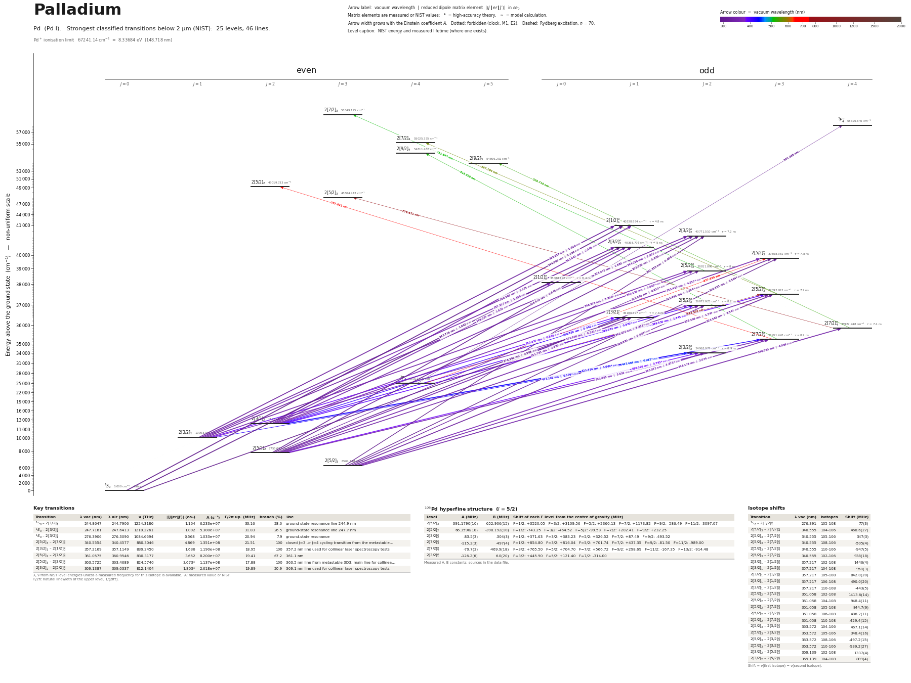

Palladium energy level diagram
Energy levels and transitions of neutral palladium (Pd I): the 46 strongest classified lines below 2 µm from the NIST Atomic Spectra Database and the 25 levels they connect, each line with its vacuum wavelength, frequency and, for 37 of them, the reduced dipole matrix element derived from the NIST transition rate. Measured lifetimes, transition rates, hyperfine constants and isotope shifts from the literature are included, each with its citation.
Hover a line or a level to isolate it, click to keep it selected. Scroll to zoom, drag to move.

Download: diagram (PDF) diagram (SVG) transitions (CSV) levels (CSV) source code

Key transitions of palladium
| Transition | λ vac (nm) | λ air (nm) | ν (THz) | |⟨J‖er‖J′⟩| (ea₀) | A (s⁻¹) | Γ/2π up. (MHz) | branch (%) | Use |
|---|---|---|---|---|---|---|---|---|
| 1S0 – 2[1/2]°1 | 244.8647 | 244.7906 | 1224.3186 | 1.164 | 6.233e+07 | 33.16 | 28.6 | ground-state resonance line 244.9 nm |
| 1S0 – 2[3/2]°1 | 247.7161 | 247.6413 | 1210.2261 | 1.092 | 5.300e+07 | 31.83 | 26.5 | ground-state resonance line 247.7 nm |
| 1S0 – 2[3/2]°1 | 276.3906 | 276.3090 | 1084.6694 | 0.568 | 1.033e+07 | 20.94 | 7.9 | ground-state resonance |
| 2[5/2]3 – 2[7/2]°4 | 340.5554 | 340.4577 | 880.3046 | 4.869 | 1.351e+08 | 21.51 | 100 | closed J=3 -> J=4 cycling transition from the metastable… |
| 2[3/2]1 – 2[1/2]°0 | 357.2169 | 357.1149 | 839.2450 | 1.636 | 1.190e+08 | 18.95 | 100 | 357.2 nm line used for collinear laser spectroscopy tests |
| 2[5/2]2 – 2[7/2]°3 | 361.0575 | 360.9546 | 830.3177 | 3.652 | 8.200e+07 | 19.41 | 67.2 | 361.1 nm |
| 2[5/2]3 – 2[3/2]°2 | 363.5725 | 363.4689 | 824.5740 | 3.673* | 1.137e+08 | 17.88 | 100 | 363.5 nm line from metastable 3D3: main line for collinea… |
| 2[3/2]2 – 2[5/2]°2 | 369.1387 | 369.0337 | 812.1404 | 1.803* | 2.618e+07 | 19.89 | 20.9 | 369.1 nm line used for collinear laser spectroscopy tests |
λ, ν from NIST level energies unless a measured frequency for this isotope is available. A: measured value or NIST. Γ/2π: natural linewidth of the upper level, 1/(2πτ).
105Pd hyperfine structure (I = 5/2)
| Level | A (MHz) | B (MHz) | Shift of each F level from the centre of gravity (MHz) |
|---|---|---|---|
| 2[5/2]3 | -391.1790(10) | -652.906(15) | F=1/2: +3520.05 F=3/2: +3109.56 F=5/2: +2360.13 F=7/2: +1173.82 F=9/2: -586.49 F=11/2: -3097.07 |
| 2[5/2]2 | 66.3590(10) | -398.192(10) | F=1/2: -743.25 F=3/2: -464.52 F=5/2: -99.53 F=7/2: +202.41 F=9/2: +232.25 |
| 2[3/2]°2 | -83.5(3) | -304(3) | F=1/2: +371.63 F=3/2: +383.23 F=5/2: +326.52 F=7/2: +87.49 F=9/2: -493.52 |
| 2[7/2]°3 | -115.3(3) | -497(4) | F=1/2: +854.80 F=3/2: +816.04 F=5/2: +701.74 F=7/2: +437.35 F=9/2: -81.50 F=11/2: -989.00 |
| 2[7/2]°4 | -79.7(3) | -469.9(18) | F=3/2: +765.50 F=5/2: +704.70 F=7/2: +566.72 F=9/2: +298.69 F=11/2: -167.35 F=13/2: -914.48 |
| 2[3/2]°1 | -126.2(6) | 6.0(20) | F=3/2: +445.90 F=5/2: +121.40 F=7/2: -314.00 |
Measured A, B constants; sources in the data file.
Isotope shifts
| Transition | λ vac (nm) | Isotopes | Shift (MHz) |
|---|---|---|---|
| 1S0 – 2[3/2]°1 | 276.391 | 105-108 | 77(3) |
| 2[5/2]3 – 2[7/2]°4 | 340.555 | 104-106 | 468.6(27) |
| 2[5/2]3 – 2[7/2]°4 | 340.555 | 105-106 | 347(3) |
| 2[5/2]3 – 2[7/2]°4 | 340.555 | 108-106 | -505(4) |
| 2[5/2]3 – 2[7/2]°4 | 340.555 | 110-106 | -947(5) |
| 2[5/2]3 – 2[7/2]°4 | 340.555 | 102-106 | 938(18) |
| 2[3/2]1 – 2[1/2]°0 | 357.217 | 102-108 | 1446(4) |
| 2[3/2]1 – 2[1/2]°0 | 357.217 | 104-108 | 958(3) |
| 2[3/2]1 – 2[1/2]°0 | 357.217 | 105-108 | 842.0(20) |
| 2[3/2]1 – 2[1/2]°0 | 357.217 | 106-108 | 490.0(20) |
| 2[3/2]1 – 2[1/2]°0 | 357.217 | 110-108 | -443(5) |
| 2[5/2]2 – 2[7/2]°3 | 361.058 | 102-108 | 1413.6(14) |
| 2[5/2]2 – 2[7/2]°3 | 361.058 | 104-108 | 948.4(11) |
| 2[5/2]2 – 2[7/2]°3 | 361.058 | 105-108 | 844.7(9) |
| 2[5/2]2 – 2[7/2]°3 | 361.058 | 106-108 | 486.2(11) |
| 2[5/2]2 – 2[7/2]°3 | 361.058 | 110-108 | -429.4(15) |
| 2[5/2]3 – 2[3/2]°2 | 363.572 | 104-106 | 467.1(14) |
| 2[5/2]3 – 2[3/2]°2 | 363.572 | 105-106 | 348.4(16) |
| 2[5/2]3 – 2[3/2]°2 | 363.572 | 108-106 | -497.2(15) |
| 2[5/2]3 – 2[3/2]°2 | 363.572 | 110-106 | -939.2(27) |
| 2[3/2]2 – 2[5/2]°2 | 369.139 | 102-108 | 1337(4) |
| 2[3/2]2 – 2[5/2]°2 | 369.139 | 104-108 | 889(4) |
Shift = ν(first isotope) − ν(second isotope).
Listed Pd transitions below 2 µm
| Lower level | Upper level | λ vacuum (nm) | λ air (nm) | ν (THz) | Type | |⟨J‖er‖J′⟩| (ea₀) | A (s⁻¹) | Branching (%) | Source of matrix element / A |
|---|---|---|---|---|---|---|---|---|---|
| 1S0 | 2[1/2]°1 | 244.8647 | 244.7906 | 1224.3186 | E1 | 1.164 measured | 6.233e+07 measured | 28.6 | Xu, Sun, Dai, Jiang, Palmeri, Quinet, Biémont, Astron. Astrophys. 452, 357 (2006), Table 2 |
| 1S0 | 2[3/2]°1 | 247.7161 | 247.6413 | 1210.2261 | E1 | 1.092 measured | 5.300e+07 measured | 26.5 | Xu, Sun, Dai, Jiang, Palmeri, Quinet, Biémont, Astron. Astrophys. 452, 357 (2006), Table 2 |
| 1S0 | 2[3/2]°1 | 276.3906 | 276.3090 | 1084.6694 | E1 | 0.568 measured | 1.033e+07 measured | 7.9 | Xu, Sun, Dai, Jiang, Palmeri, Quinet, Biémont, Astron. Astrophys. 452, 357 (2006), Table 2 |
| 2[5/2]3 | 2[3/2]°2 | 292.3347 | 292.2492 | 1025.5109 | E1 | 0.400 measured | 2.600e+06 measured | 2 | Xu, Sun, Dai, Jiang, Palmeri, Quinet, Biémont, Astron. Astrophys. 452, 357 (2006), Table 2 |
| 2[5/2]3 | 2[5/2]°3 | 300.3525 | 300.2650 | 998.1354 | E1 | 0.594 theory | 3.771e+06 theory | 2.94 | Xu, Sun, Dai, Jiang, Palmeri, Quinet, Biémont, Astron. Astrophys. 452, 357 (2006), Table … |
| 3F4 | 3F°4 | 301.0651 | 300.9774 | 995.7729 | E1 | – | – | – | – |
| 2[5/2]2 | 2[3/2]°2 | 302.8790 | 302.7908 | 989.8093 | E1 | 0.959 measured | 1.340e+07 measured | 10.2 | Xu, Sun, Dai, Jiang, Palmeri, Quinet, Biémont, Astron. Astrophys. 452, 357 (2006), Table 2 |
| 2[5/2]2 | 2[3/2]°1 | 306.6189 | 306.5298 | 977.7363 | E1 | 0.843 measured | 1.667e+07 measured | 8.3 | Xu, Sun, Dai, Jiang, Palmeri, Quinet, Biémont, Astron. Astrophys. 452, 357 (2006), Table 2 |
| 2[5/2]2 | 2[5/2]°3 | 311.4941 | 311.4038 | 962.4338 | E1 | 1.224 theory | 1.434e+07 theory | 11.2 | Xu, Sun, Dai, Jiang, Palmeri, Quinet, Biémont, Astron. Astrophys. 452, 357 (2006), Table … |
| 2[5/2]2 | 2[5/2]°2 | 321.9899 | 321.8970 | 931.0616 | E1 | 0.230 theory | 6.400e+05 theory | 0.51 | Xu, Sun, Dai, Jiang, Palmeri, Quinet, Biémont, Astron. Astrophys. 452, 357 (2006), Table … |
| 2[5/2]3 | 2[5/2]°3 | 324.3635 | 324.2699 | 924.2486 | E1 | 3.547 measured | 1.067e+08 measured | 76.8 | Xu, Sun, Dai, Jiang, Palmeri, Quinet, Biémont, Astron. Astrophys. 452, 357 (2006), Table 2 |
| 2[3/2]1 | 2[1/2]°1 | 325.2574 | 325.1636 | 921.7084 | E1 | 1.520 measured | 4.533e+07 measured | 20.9 | Xu, Sun, Dai, Jiang, Palmeri, Quinet, Biémont, Astron. Astrophys. 452, 357 (2006), Table 2 |
| 2[3/2]1 | 2[3/2]°2 | 325.9716 | 325.8776 | 919.6889 | E1 | 1.685 measured | 3.320e+07 measured | 25.2 | Xu, Sun, Dai, Jiang, Palmeri, Quinet, Biémont, Astron. Astrophys. 452, 357 (2006), Table 2 |
| 2[5/2]3 | 2[5/2]°2 | 328.8195 | 328.7248 | 911.7236 | E1 | 0.603 theory | 4.140e+06 theory | 3.39 | Xu, Sun, Dai, Jiang, Palmeri, Quinet, Biémont, Astron. Astrophys. 452, 357 (2006), Table … |
| 2[3/2]1 | 2[3/2]°1 | 330.3077 | 330.2126 | 907.6158 | E1 | 2.175 measured | 8.867e+07 measured | 44.4 | Xu, Sun, Dai, Jiang, Palmeri, Quinet, Biémont, Astron. Astrophys. 452, 357 (2006), Table 2 |
| 2[5/2]2 | 2[5/2]°3 | 337.3963 | 337.2994 | 888.5470 | E1 | 1.747 measured | 2.300e+07 measured | 16.6 | Xu, Sun, Dai, Jiang, Palmeri, Quinet, Biémont, Astron. Astrophys. 452, 357 (2006), Table 2 |
| 2[5/2]3 | 2[7/2]°4 | 340.5554 | 340.4577 | 880.3046 | E1 | 4.869 measured | 1.351e+08 measured | 100 | Xu, Sun, Dai, Jiang, Palmeri, Quinet, Biémont, Astron. Astrophys. 452, 357 (2006), Table 2 |
| 2[5/2]2 | 2[5/2]°2 | 342.2202 | 342.1221 | 876.0220 | E1 | 3.483 theory | 1.226e+08 theory | 100 | Xu, Sun, Dai, Jiang, Palmeri, Quinet, Biémont, Astron. Astrophys. 452, 357 (2006), Table … |
| 2[3/2]2 | 2[1/2]°1 | 343.4412 | 343.3428 | 872.9076 | E1 | 2.565 measured | 1.097e+08 measured | 50.5 | Xu, Sun, Dai, Jiang, Palmeri, Quinet, Biémont, Astron. Astrophys. 452, 357 (2006), Table 2 |
| 2[3/2]2 | 2[3/2]°2 | 344.2376 | 344.1390 | 870.8881 | E1 | 2.877 measured | 8.220e+07 measured | 62.4 | Xu, Sun, Dai, Jiang, Palmeri, Quinet, Biémont, Astron. Astrophys. 452, 357 (2006), Table 2 |
| 2[5/2]3 | 2[7/2]°3 | 346.1729 | 346.0738 | 866.0193 | E1 | 2.074 NIST | 3.000e+07 NIST | 24.6 | NIST ASD (accuracy n/a) |
| 2[3/2]1 | 2[5/2]°2 | 348.2148 | 348.1152 | 860.9411 | E1 | 3.290 theory | 1.039e+08 theory | 83.1 | Xu, Sun, Dai, Jiang, Palmeri, Quinet, Biémont, Astron. Astrophys. 452, 357 (2006), Table … |
| 2[3/2]2 | 2[3/2]°1 | 349.0769 | 348.9770 | 858.8151 | E1 | 1.620 measured | 4.167e+07 measured | 20.8 | Xu, Sun, Dai, Jiang, Palmeri, Quinet, Biémont, Astron. Astrophys. 452, 357 (2006), Table 2 |
| 2[5/2]2 | 2[3/2]°1 | 351.7949 | 351.6943 | 852.1796 | E1 | 2.679 measured | 1.113e+08 measured | 84.5 | Xu, Sun, Dai, Jiang, Palmeri, Quinet, Biémont, Astron. Astrophys. 452, 357 (2006), Table 2 |
| 2[3/2]2 | 2[5/2]°3 | 355.4096 | 355.3081 | 843.5126 | E1 | 4.237 theory | 1.157e+08 theory | 90.3 | Xu, Sun, Dai, Jiang, Palmeri, Quinet, Biémont, Astron. Astrophys. 452, 357 (2006), Table … |
| 2[3/2]1 | 2[1/2]°0 | 357.2169 | 357.1149 | 839.2450 | E1 | 1.636 measured | 1.190e+08 measured | 100 | Xu, Sun, Dai, Jiang, Palmeri, Quinet, Biémont, Astron. Astrophys. 452, 357 (2006), Table 2 |
| 2[5/2]2 | 2[7/2]°3 | 361.0575 | 360.9546 | 830.3177 | E1 | 3.652 NIST | 8.200e+07 NIST | 67.2 | NIST ASD (accuracy n/a) |
| 2[5/2]3 | 2[3/2]°2 | 363.5725 | 363.4689 | 824.5740 | E1 | 3.673 theory | 1.137e+08 theory | 100 | Xu, Sun, Dai, Jiang, Palmeri, Quinet, Biémont, Astron. Astrophys. 452, 357 (2006), Table … |
| 2[3/2]2 | 2[5/2]°2 | 369.1387 | 369.0337 | 812.1404 | E1 | 1.803 theory | 2.618e+07 theory | 20.9 | Xu, Sun, Dai, Jiang, Palmeri, Quinet, Biémont, Astron. Astrophys. 452, 357 (2006), Table … |
| 2[3/2]1 | 2[5/2]°2 | 371.9964 | 371.8906 | 805.9015 | E1 | 0.741 theory | 4.320e+06 theory | 3.54 | Xu, Sun, Dai, Jiang, Palmeri, Quinet, Biémont, Astron. Astrophys. 452, 357 (2006), Table … |
| 2[5/2]2 | 2[3/2]°2 | 380.0265 | 379.9187 | 788.8724 | E1 | 0.793 theory | 4.640e+06 theory | 4.13 | Xu, Sun, Dai, Jiang, Palmeri, Quinet, Biémont, Astron. Astrophys. 452, 357 (2006), Table … |
| 2[3/2]1 | 2[3/2]°1 | 383.3373 | 383.2286 | 782.0591 | E1 | 0.800 measured | 7.667e+06 measured | 5.9 | Xu, Sun, Dai, Jiang, Palmeri, Quinet, Biémont, Astron. Astrophys. 452, 357 (2006), Table 2 |
| 2[3/2]2 | 2[5/2]°3 | 389.5302 | 389.4198 | 769.6258 | E1 | 1.345 measured | 8.857e+06 measured | 6.4 | Xu, Sun, Dai, Jiang, Palmeri, Quinet, Biémont, Astron. Astrophys. 452, 357 (2006), Table 2 |
| 2[3/2]2 | 2[5/2]°2 | 395.9743 | 395.8623 | 757.1008 | E1 | 0.970 theory | 6.140e+06 theory | 5.03 | Xu, Sun, Dai, Jiang, Palmeri, Quinet, Biémont, Astron. Astrophys. 452, 357 (2006), Table … |
| 2[3/2]2 | 2[3/2]°1 | 408.8497 | 408.7343 | 733.2584 | E1 | 0.461 measured | 2.100e+06 measured | 1.6 | Xu, Sun, Dai, Jiang, Palmeri, Quinet, Biémont, Astron. Astrophys. 452, 357 (2006), Table 2 |
| 2[3/2]1 | 2[3/2]°2 | 417.1014 | 416.9839 | 718.7520 | E1 | 0.179 theory | 1.800e+05 theory | 0.16 | Xu, Sun, Dai, Jiang, Palmeri, Quinet, Biémont, Astron. Astrophys. 452, 357 (2006), Table … |
| 2[3/2]2 | 2[7/2]°3 | 421.4140 | 421.2953 | 711.3965 | E1 | 1.060 theory | 4.343e+06 theory | 3.56 | Xu, Sun, Dai, Jiang, Palmeri, Quinet, Biémont, Astron. Astrophys. 452, 357 (2006), Table … |
| 2[3/2]2 | 2[3/2]°2 | 447.4840 | 447.3585 | 669.9512 | E1 | 0.282 theory | 3.600e+05 theory | 0.32 | Xu, Sun, Dai, Jiang, Palmeri, Quinet, Biémont, Astron. Astrophys. 452, 357 (2006), Table … |
| 2[5/2]°2 | 2[7/2]3 | 511.8433 | 511.7007 | 585.7114 | E1 | – | – | – | – |
| 2[7/2]°3 | 2[9/2]4 | 516.5279 | 516.3840 | 580.3994 | E1 | – | – | – | – |
| 2[7/2]°4 | 2[9/2]5 | 529.7100 | 529.5626 | 565.9558 | E1 | – | – | – | – |
| 2[5/2]°3 | 2[7/2]4 | 567.1644 | 567.0070 | 528.5813 | E1 | – | – | – | – |
| 3F4 | 2[5/2]°3 | 677.6387 | 677.4517 | 442.4075 | E1 | – | – | – | – |
| 2[7/2]°3 | 2[5/2]2 | 737.0125 | 736.8096 | 406.7671 | E1 | – | – | – | – |
| 2[7/2]°4 | 2[5/2]3 | 776.6107 | 776.3970 | 386.0267 | E1 | – | – | – | – |
| 3F4 | 2[5/2]°3 | 813.5024 | 813.2788 | 368.5207 | E1 | – | – | – | – |
Reduced dipole matrix elements follow the convention A = ω³|d|²/(3πε₀ħc³(2J′+1)), with J′ the upper level. Tags show where a number comes from: measured, NIST compilation, high-accuracy theory, or a model calculation.
Pd energy levels
Pd⁺ ionisation limit 67241.14 cm⁻¹ = 8.33684 eV (148.718 nm)
Sources
- Biémont, Grevesse, Kwiatkowski, Zimmermann, Astron. Astrophys. 108, 127 (1982), Table 2 (…
- Channappa, Pendlebury, Proc. Phys. Soc. 86, 1145 (1965) (atomic-beam magnetic resonance),…
- Channappa, Pendlebury, Proc. Phys. Soc. 86, 1145 (1965) (atomic-beam magnetic resonance),…
- Geldhof, Campbell, Cheal, de Groote, Gins, Moore, Hyperfine Interact. 241, 41 (2020), Tab…
- Geldhof, Campbell, Cheal, de Groote, Gins, Moore, Hyperfine Interact. 241, 41 (2020), Tab…
- NIST ASD
- NIST ASD level energies
- Sulai, Mueller, Phys. Rev. A 102, 042805 (2020) "Laser spectroscopy of metastable palladi…
- Sulai, Mueller, Phys. Rev. A 102, 042805 (2020) "Laser spectroscopy of metastable palladi…
- Xu, Sun, Dai, Jiang, Palmeri, Quinet, Biémont, Astron. Astrophys. 452, 357 (2006), Table …
- Xu, Sun, Dai, Jiang, Palmeri, Quinet, Biémont, Astron. Astrophys. 452, 357 (2006), Table 2
- Xu, Sun, Dai, Jiang, Palmeri, Quinet, Biémont, Astron. Astrophys. 452, 357 (2006), Table …
Isotope shifts are nu(first) - nu(second). Sulai & Mueller tabulate nu(A) - nu(106); Geldhof et al. tabulate delta nu(108,A) = nu(A) - nu(108); both kept as printed, so keys use 106 or 108 as the second isotope. For the Geldhof values "unc" is the statistical and "unc_syst" the systematic (acceleration/cooler voltage) uncertainty; the 105Pd values refer to the hyperfine centre of gravity. Level lifetimes: Xu et al. 2006 (time-resolved LIF, six levels) where available, otherwise Biémont et al. 1982 (time-resolved LIF on an atomic beam); other measurements and HFR theory under lifetime.alternatives. A_s for the 20 lines of Xu et al. Table 2 are experimental (A = BF/tau) and were converted from the printed g_k A_ki by dividing by 2J_upper+1; the 17 lines from their Table 3 are HFR theory (method "theory") and should only be used where nothing measured exists. NIST A values exist for only 8 Pd I lines (5 from Biémont et al. 1982, 3 from Morton 2000). Extra fields beyond SCHEMA.md: ionization_limit, lifetime.alternatives, hyperfine.<A>.alternatives, isotope_shift_other, linewidth_MHz, unc_syst, note. Hyperfine constants follow E = A K/2 + B [3K(K+1)/4 - I(I+1)J(J+1)] / [2I(2I-1)J(2J-1)]; 105Pd has I = 5/2 and negative magnetic moment (inverted structure for most levels). LS names in parentheses in the labels are those used by the cited papers (3D3, 3P2, 3F4, ...); NIST uses J1K notation.
Atoms with measured data
- Lithium-632 levels, 85 lines
- Lithium-732 levels, 85 lines
- Beryllium-915 levels, 24 lines
- Sodium-2336 levels, 106 lines
- Magnesium-2418 levels, 61 lines
- Magnesium-2518 levels, 61 lines
- Potassium-3934 levels, 84 lines
- Potassium-4034 levels, 84 lines
- Potassium-4134 levels, 84 lines
- Calcium-4035 levels, 61 lines
- Calcium-4335 levels, 61 lines
- Rubidium-8536 levels, 94 lines
- Rubidium-8736 levels, 94 lines
- Strontium-8740 levels, 70 lines
- Strontium-8840 levels, 70 lines
- Caesium-13331 levels, 79 lines
- Barium-13744 levels, 89 lines
- Barium-13844 levels, 89 lines
- Dysprosium-16339 levels, 55 lines
- Dysprosium-16439 levels, 55 lines
- Ytterbium-17118 levels, 26 lines
- Ytterbium-17418 levels, 26 lines